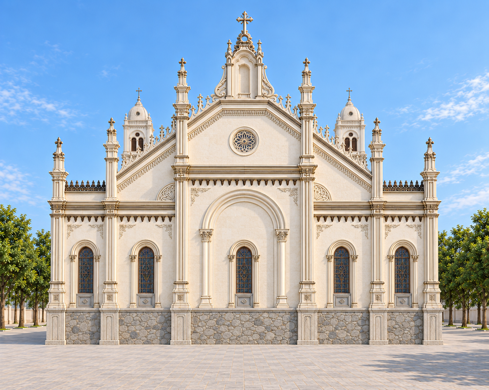

Thach Bi Church · 5 October 2026
Reference checkpoint
Historical source-input subset. Superseded gallery images were removed at the owner’s request on 7 October 2026. Required generation inputs and the simulator-frame/stair sources remain; this is not the latest design gallery.
Open the current reference library for the sixteen new church views.

Earlier front source
Flat stage before the stairs, open tower arches and brown shutters.

Rear elevation
Five narrow windows above the continuous stone base, with no rear stairs.

Side stair beside the door
The earlier close-up, preserved as requested.

Interior in daylight
Column rows, exposed timber roof, central aisle and sanctuary arch.